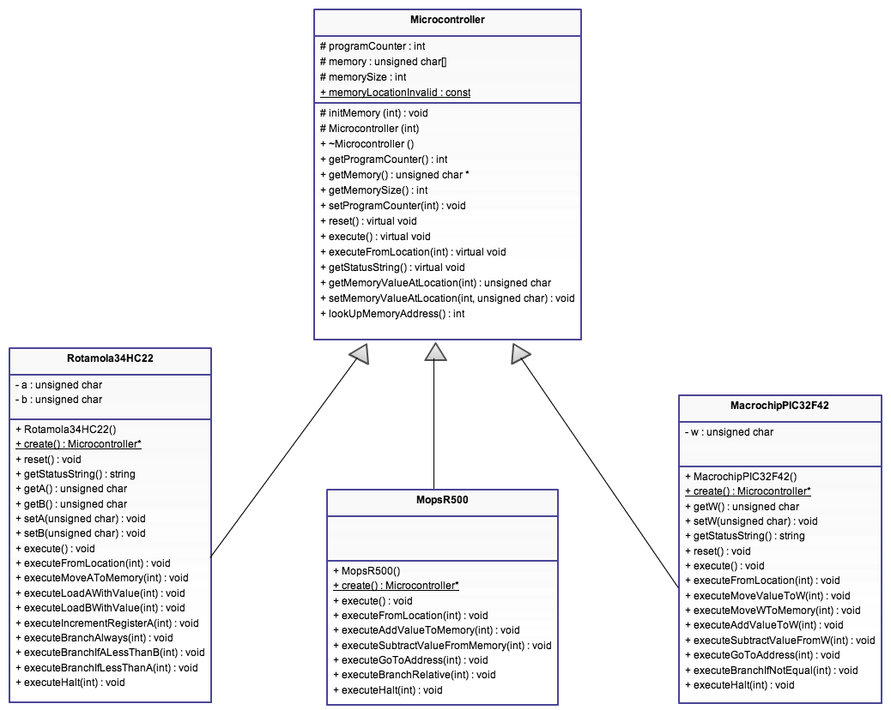

Title: Microcontroller Emulation
Assignment No: COSC2131 - Programming Using C++ - Assignment 1 - 2013A
Student Name: Tran Xuan Truong
Student ID: S3393320
Lecturer: Mr Barend Scholtus & Mr Kevin Jackson
To build the program, simply run the make command in the program directory.
To run the program after build, run the output file main.
To clean all the output files, run the command make clean.

The base class for all microcontroller. All other microcontroller must extend this class.
Specific microcontroller classes. They all extend the base class Micrcontroller. All of them have to override the reset(), execute(), executeFromLocation() and getStatusString() functions in Microcontroller class. They have their additional executeXXX() functions to perform the appropriate opcode. Moreover, there is also a static function create() in those classes. What this function does is simply just return a new instance of that microcontroller class. More precisely, it returns a Microcontroller* pointer which points to a new object of that class. I implement this function for using with the MicrocontrollerFactory class below.
This class handles the creation of specific microcontroller class. It contains a map with the key is the string represents the type of microcontroller and the value is the pointer to the static function create() in that microcontroller class (the create() function I have mentioned above).
Later, when there is more microcontroller class, the only place that we have to edit the code is in the constructor of this MicrocontrollerFactory class. We will need to call the addMicrocontroller() function of this class. There is no need to edit the source code in other place because this class handles it automatically.
To create a new microcontroller, call the createMicrocontroller() function of this class and pass the microcontroller name as the argument. The return type is a Microcontroller* pointer to the newly created object.
I implemented the first requirement of extra feature section, that is the extensibility. To do this, I used one extra class MicrocontrollerFactory which I haved mentioned before.